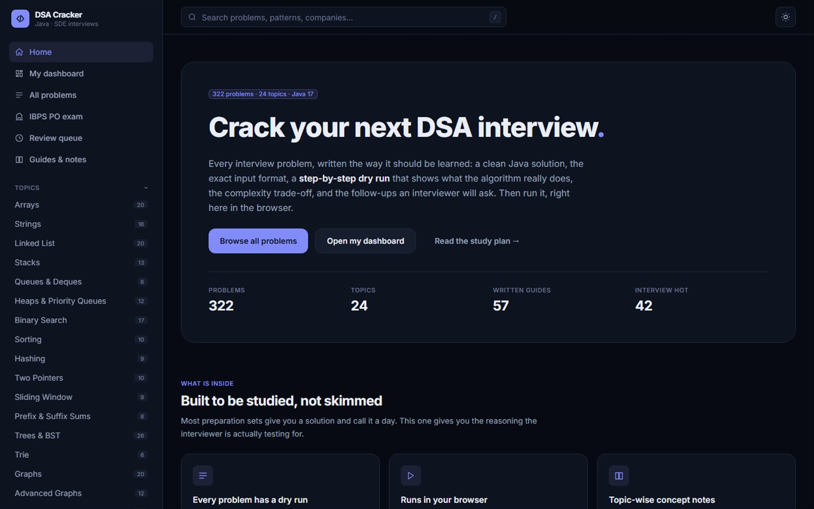

LiveFlagship project
DSA Interview Cracker
322 Java problems across 24 topics — each written the way it should be learned: a clean solution, the exact input format, a step-by-step dry run showing what the algorithm really does, the complexity trade-off, and the follow-ups an interviewer will actually ask. Then run it, in the browser.
JavaJavaScriptGitHub Pages